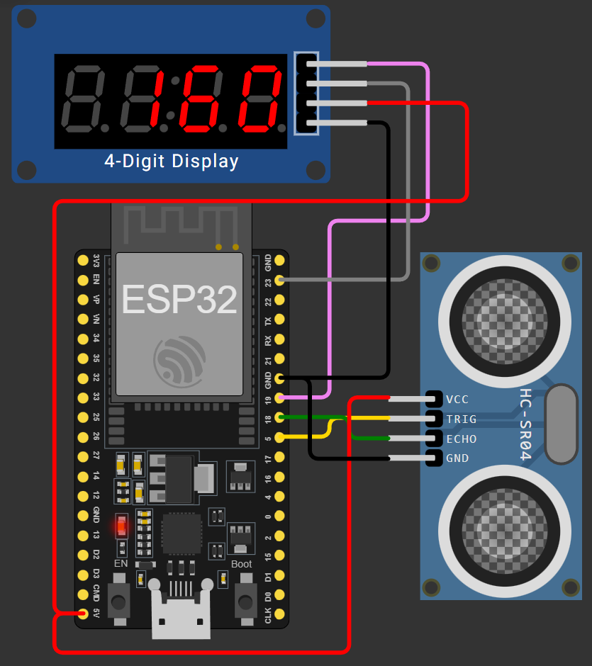
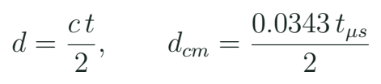
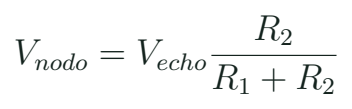

Distancia: tiempo de vuelo, adaptación de nivel y lecturas inválidas
Convertir un tiempo de eco en distancia y comprobar su coherencia sin confundir falta de eco con distancia cero.
Qué observa el sensor ultrasónico
El HC-SR04 representa distancia mediante la duración de un pulso de eco asociado a una medición acústica. El sonido recorre la ida hasta el objeto y la vuelta al sensor. Esa doble trayectoria explica la división entre dos. No se está midiendo luz ni una distancia por imagen. El tamaño, orientación y superficie del objeto pueden cambiar el eco disponible en hardware.

En Wokwi se puede seleccionar una distancia de entrada del modelo y observar qué informa el programa. Eso es útil para comprobar la conversión y el tratamiento de extremos. En el banco, la distancia se contrasta con una referencia física y un objeto definido. La simulación no sustituye las comprobaciones de alimentación, nivel de señal, montaje o respuesta ante superficies diferentes.
Una fórmula con ida y vuelta

Eco de 1000 microsegundos
Con la velocidad de aula, ¿qué distancia representa un pulso de 1000 μs?
Ver razonamiento del caso
El recorrido total sería 34,3 cm. La distancia de ida es la mitad: 17,15 cm. Es una conversión del modelo, no una verificación de exactitud del módulo.
Tiempo, cálculo y referencia
| Dato | Unidad | Qué debe acompañarlo |
|---|---|---|
| Duración del eco | microsegundos | Operación válida |
| Distancia calculada | cm | Conversión utilizada |
| Distancia de referencia | cm | Puntos físicos de medida |
Una comparación requiere definir desde dónde se mide. La cara del sensor y el borde de una caja no son la misma referencia. Para una primera práctica bastan tres posiciones separadas y una superficie que el docente haya comprobado. Repetir lecturas en la misma posición permite observar dispersión. Cambiar posición y superficie a la vez impediría atribuir con claridad una diferencia.
La señal de 5 V y la entrada de 3,3 V
El esquema original del laboratorio representa la simulación. Para hardware, el nivel de ECHO debe adaptarse a la entrada del ESP32 cuando el módulo lo entrega a 5 V. No se supone que un GPIO de la placa tolere ese nivel. En un divisor resistivo, R1 se coloca entre la salida ECHO y el nodo de medida; R2 se coloca entre ese nodo y GND. La referencia común debe estar definida.

Interfaz física que se comprueba
| Conexión | Función | Revisión |
|---|---|---|
| VCC del sensor | Alimentación del módulo | Ficha del módulo |
| TRIG | Inicio de medición | Compatibilidad de entrada |
| ECHO adaptado | Señal al GPIO | Nivel medido |
| GND | Referencia común | Continuidad |
El divisor es parte de la interfaz, no una instrucción opcional que se omite porque la animación funciona. Un sensor de distancia compatible con lógica de 3,3 V puede utilizar otra interfaz, siempre que su documentación lo respalde. El docente conserva la referencia del componente físico: “HC-SR04 o equivalente” no hace idénticos todos sus módulos.
Tiempo de espera y ausencia de dato
Núcleo de c07_distancia
unsigned long us = pulseIn(ECHO, HIGH, 25000UL);
if (us == 0) {
Serial.println("INVALID");
return;
}
float distance_cm = us * 0.0343f / 2.0f;La llamada tiene un tiempo de espera explícito. Sigue siendo bloqueante, pero su duración máxima queda acotada para esta práctica. Devolver cero por no completar el pulso no significa que el objeto esté tocando el sensor. Primero se interpreta la condición de la operación y después se calcula distancia. Una pantalla que muestra 0 cm para cualquier error pierde esa distinción.
El tiempo de la adquisición también ocupa parte de la agenda. Si después coordinamos un servo, habrá que considerar su movimiento, la espera del sensor y el momento de aceptar la lectura. La versión de clase es deliberadamente pequeña para que esa duración pueda verse antes de construir un explorador. Guardar tiempo de inicio y de fin permite comprobar cuánto estuvo ocupada cada operación.
Laboratorio de contraste y fallos
- Revisa el esquema de simulación y la tabla de interfaz física.
- Ejecuta c07_distancia y cambia tres distancias conocidas en Wokwi.
- Calcula manualmente un caso a partir del tiempo de eco.
- En banco, contrasta tres posiciones con regla y objeto definidos.
- Retira el eco con el procedimiento del docente y observa INVALID.
- Compara la conversión ideal y la referencia, sin inventar una corrección con un único punto.
- Registra una condición en la que la lectura no deba usarse para decidir.
Registro mínimo
| Referencia / cm | Medida / cm | Estado / observación |
|---|---|---|
| Posición 1 | Por obtener | Objeto y montaje |
| Posición 2 | Por obtener | Misma referencia |
| Sin eco | Sin distancia válida | Tiempo de espera |
La diferencia entre referencia y medida se describe primero en centímetros. Un porcentaje puede resultar confuso cerca de cero. El propósito del ejercicio es encontrar si la conversión tiene sentido, si se conserva una referencia y si el programa trata la ausencia de eco. La calibración detallada de un sistema ultrasónico completo queda fuera de esta primera práctica.
Aplicación y límites de una medida de proximidad
Una aplicación de apoyo a drones puede usar distancia para demostrar principios de proximidad o para un banco de exploración. La lectura de un módulo educativo no basta para prometer navegación o prevención de colisiones. La clase enseña a observar cobertura, tiempos y casos inválidos. Esa forma de trabajar permite después comparar otras tecnologías de sensado sin creer que todas fallan de la misma manera.
Dato repetido
La pantalla repite 25 cm durante un fallo. ¿Qué necesita saber la aplicación?
Ver razonamiento del caso
Si se obtuvo una lectura nueva, cuándo ocurrió y qué estado devolvió la adquisición. Repetir un valor almacenado no demuestra que el objeto permanezca a 25 cm.
Investiga por qué una superficie inclinada puede cambiar el eco y por qué la velocidad del sonido no es una constante independiente del ambiente. Explica la consecuencia práctica sin resolver un modelo acústico avanzado. El reto de transferencia consiste en escribir una política para dato inválido: aviso, conservación con edad o suspensión de una decisión que dependía de esa lectura.
Práctica guiada
- Relacionar ida y vuelta con una distancia observable.
- Resolver el ejemplo de 1000 μs y revisar unidades.
- Comprobar c07_distancia con eco y sin eco.
- Contrastar una referencia y explicar la adaptación de ECHO.
Preguntas de cierre
¿Por qué se divide entre dos?
Porque el tiempo corresponde al recorrido de ida y vuelta.
¿pulseIn con timeout deja de bloquear?
No. La espera queda acotada por el tiempo establecido.
¿Un retorno cero es distancia cero?
No; en este uso representa que no se completó un pulso válido.
Entrega
Conversión explicada, tabla de contraste y tratamiento de lectura inválida.
Proyectos MECRO relacionados
- 06. Huicha Digital · Núcleo. Distancia con tiempo de vuelo Abrir referencia Wokwi
Fuentes para ampliar
[MECRO] MECRO. Laboratorio Electrónica con ESP32: veinte proyectos.
[HC] Wokwi. Referencia del sensor HC-SR04.
[GPIO] Espressif Systems. GPIO y restricciones de ESP32 clásico.
[WOKWI] Wokwi. ESP32 Simulation: periféricos y límites.